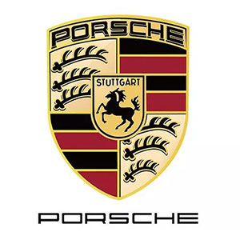

品牌文化

保时捷的英文车标引采用德国保时捷公司创始人费迪南德·保时捷的姓氏。图形车标采用公司所在地斯图加特市的盾形市徽。“PORSCHE”字样在商标的最上方，表明该商标为保时捷设计公司所拥有商标中的“STUTTGART”字样在马的上方，说明公司总部在斯图加特市；商标中间是一匹骏马，表示斯图加特这个地方盛产一种名贵种马；商标的左上方和右下方是鹿角的图案，表示斯图加特曾经是狩猎的好地方；商标右上方和左下方的黄色条纹代表成熟了的麦子颜色，喻指五谷丰登，商标中的黑色代表肥沃土地，商标中的红色象征人们的智慧与对大自然的钟爱，由此组成一幅精湛意深、秀气美丽的田园风景画，展现了保时捷公司辉煌的过去，并预示了保时捷公司美好的未来，保时捷跑车的出类拔萃。
保时捷介绍